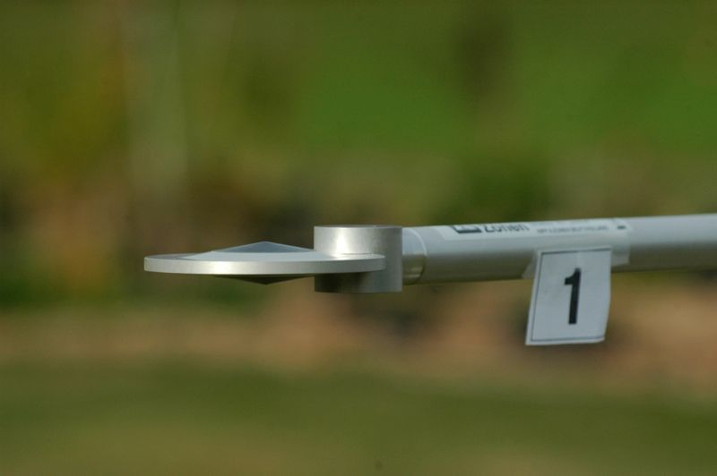

|
|
|
Net all-wave radiometer |

This is the net radiometer. It measures net all-wave radiation Q*. The net radiometer has no domes and the temperature of the two absorber disks (one on the upper side, one on the lower side) are affected by both, short-wave and long-wave radiation. The difference in temperature between the two absorber disks is directly proportional to Q*.
Page: 3 of 11 (27%)